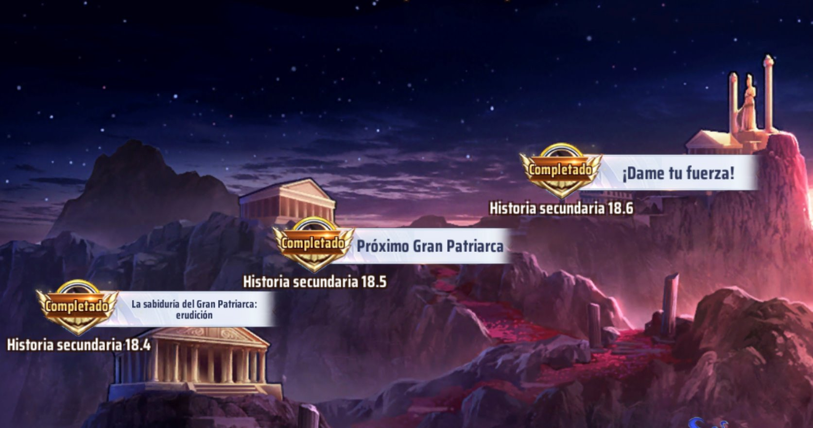
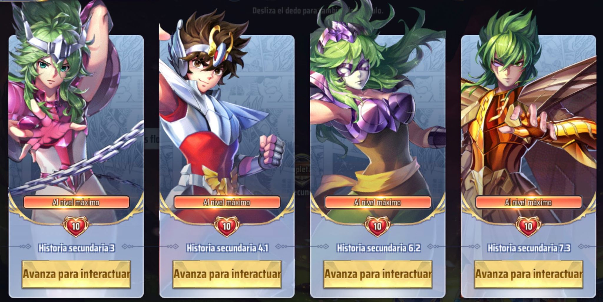
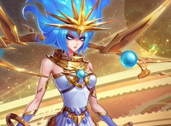
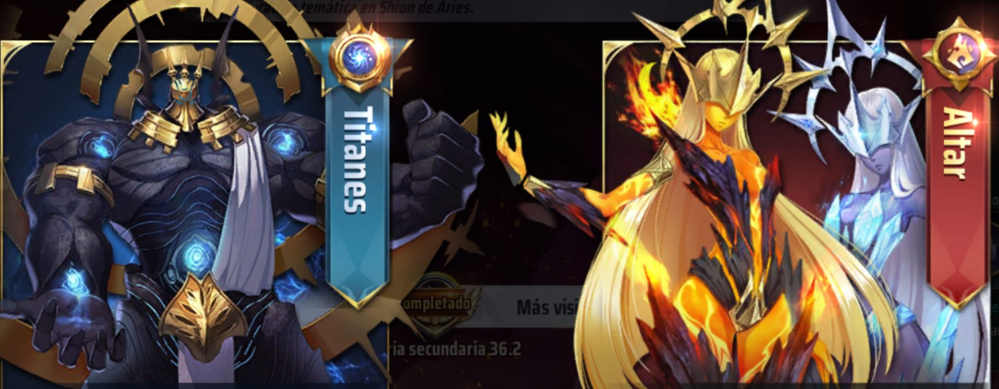
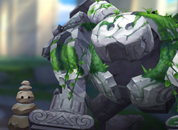
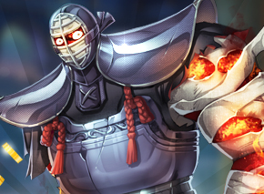
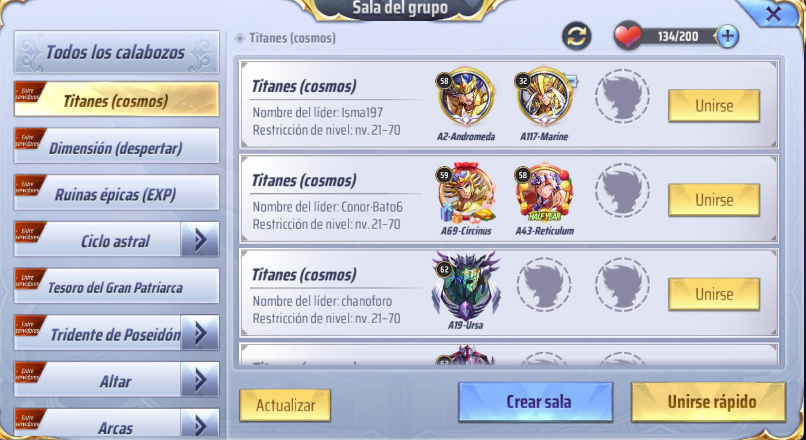
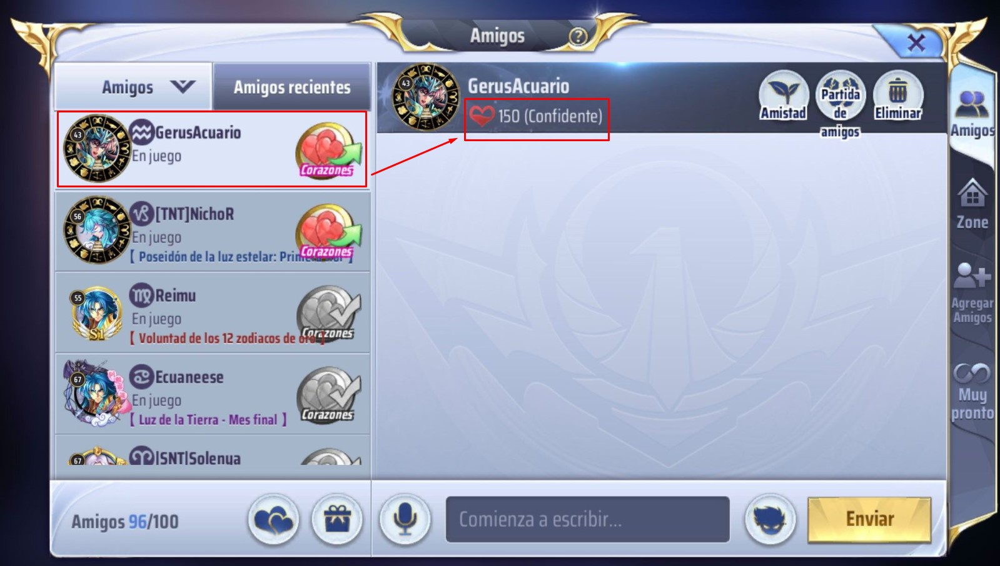

Historia secundaria
Realiza las historias secundarias para obtener recompensas como oro, diamantes, fragmentos de caballeros, flores.
Misiones de caballeros
Después de completar una historia secundaria, es posible que encuentres caballeros afligidos por el demonio mental, ayúdalos a liberarse en batallas o respondiendo algunas preguntas, puedes obtener fragmentos de caballeros, racimos de flores y corazones de amistad.
Dimensión
En Dimensión obtienes Piedras del despertar, estas ayudan a activar el Séptimo Sentido de los caballeros, que son habilidades nuevas que podrás utilizar en batalla, los niveles son fáciles de hacer, pero en cuentas que llevan poco de iniciar no tanto.

Espacio astral
En Espacio astral se obtienen materiales que son requeridos para aumentar las estadísticas de tus caballeros en el Octavo Sentido.
Titanes y Altar
Aquí se puede obtener cosmo que es muy importante para subir las habilidades de los caballeros, todos los días cambian, así que debes de estar atento para que no se te pase el que buscas. Guia de Cosmos
Ruinas épicas
Obtén mucha experiencia y llaves del espacio-tiempo, son útiles para el desarrollo de tus caballeros.
Arcas
El oro es muy raro que se llegue a terminar, pero en caso que se te esté terminando puedes obtener grandes cantidades aquí, golpea a Tatsumi loco y venga a Ikki de niño.
La mejor forma de farmeo en cualquiera de estos niveles es haciéndolo en grupo.
Obtienes más recompensas si lo haces de esta forma y si los amigos del grupo tiene una amistad de Confidente aumenta otro poquito más, así que únete con tus amigos de legión
